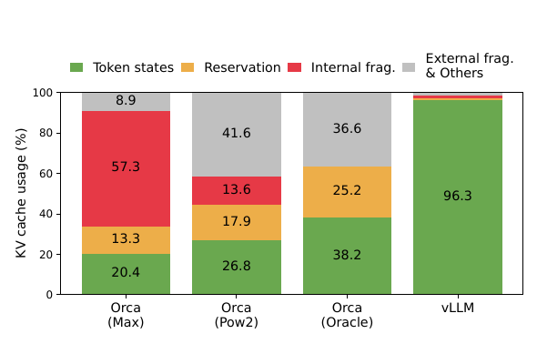
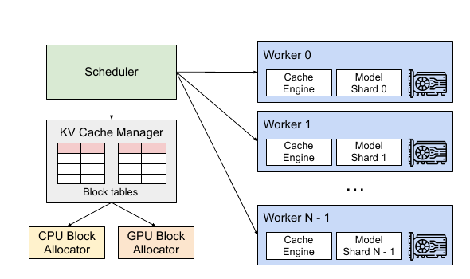
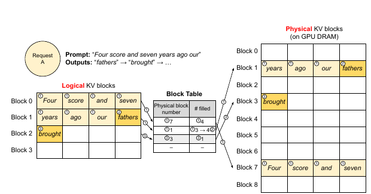
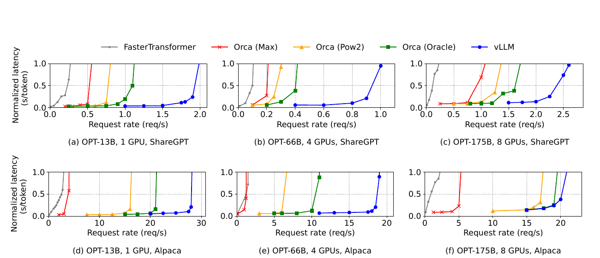
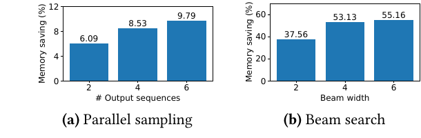
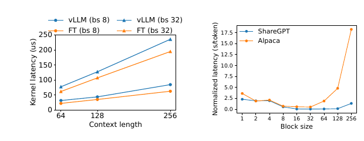

Efficient Memory Management for Large Language Model Serving with PagedAttention
vLLM 以 PagedAttention 讓每條序列的 KV cache 可按固定大小 block、非連續地存放與分享，把未知輸出長度造成的預留與碎片浪費壓到至多一個尾端 block，因而能在相近延遲下批次更多請求；論文在 OPT／LLaMA、A100 與合成到達 traces 上報告相對既有系統約 2–4× 的整體吞吐量提升。§10 · PDF p.14
實驗事實 在 ShareGPT basic sampling 中，vLLM 可承受的 request rate 比不可實現、已知真實輸出長度的 Orca (Oracle) 高 1.7–2.7×，但這是論文特定模型、硬體、trace 與作者重作 baseline 下的結果，不應解讀為所有線上服務的固定倍率。§6.2 · PDF p.11 · Figure 12
文章目錄
自迴歸 KV、Reservation、Fragmentation 與 Copy-on-Write
只需要四個前置概念
| 概念 | 最小理解 | 後文用途 |
|---|---|---|
| Prefill 與 decode | Prefill 同時處理已知 prompt token，可用矩陣–矩陣運算；decode 受資料相依限制，每輪只產生一個新 token，常呈 memory-bound。 | 解釋為何方法章在 prompt 建 cache 後逐輪追加 block，也解釋為何證據章中增加 batch size 能提高利用率。 |
| KV cache | 每層 attention 將既有 token 的 key／value 保存，後續 token 不必重算；cache 隨序列長度線性成長，且結束時間未知。 | 連到容量瓶頸與後文的 block 生命週期。 |
| Iteration-level scheduling | 每輪 decode 後移除完成請求、加入新請求，避免 request-level batching 的 padding 與長請求阻塞；但同時存活的 cache 仍須塞進 GPU。 | 說明 Orca 與 vLLM 的互補關係：排程解決「何時進 batch」，paging 解決「working set 是否放得下」。 |
| Paging 與 copy-on-write | 邏輯連續位址可映射到非連續實體頁；多個邏輯擁有者可先讀同一實體頁，直到寫入時才複製。 | 連到方法章的 block table、共享 prompt／beam prefix 與 reference count。 |
論文把生成序列定義為 prompt 與輸出 token 的串接。Prefill 產生 prompt 的 KV cache；每個 decode iteration 讀取全部既有 cache、計算下一 token，並再追加一份新 cache。這個「讀全部、每輪增加一格、何時停止未知」的狀態形狀，是 PagedAttention 能成立的核心，而不是一般張量分頁都必然有效。§2.2 · PDF p.3
分析 因果橋接如下：iteration-level scheduling 已把計算 padding 降低，但每多容納一條 active sequence 就要同時持有其 KV cache；因此下一個問題不是「GPU 是否還有 FLOPS」，而是「動態 working set 是否被配置方式浪費」。這正導向下一章的容量與碎片問題。§2.3 · PDF p.3
有了這些背景，下一個問題是：GPU 明明還有空間，為何連續配置仍拒絕新請求
GPU 明明還有空間，為何連續配置仍拒絕新請求
可觀察症狀：GPU 還能算，batch 卻放不下
以 OPT-13B 為例，一個 token 的 KV cache 需要 (2\times5120\times40\times2=819{,}200) bytes，約 800 KB；若序列長到 2048 token，單一 request 最多約 1.6 GB。論文的 A100 40 GB 範例中，模型參數約占 65%，KV cache 占近 30%，所以服務容量主要由 cache 管理決定。§3 · PDF p.4§1 · PDF p.1 · Figure 1
根因：把未知長度的動態物件塞進預先保留的連續 chunk
- Reservation：尚未生成的 token slot 已被某 request 長期占住，其他 request 不能借用。
- Internal fragmentation：實際輸出比最大長度短，request 結束後才確知有一大段永不使用。
- External fragmentation：不同大小的連續 chunk 在 allocator 中留下無法滿足新配置的孔洞。
- Duplication：parallel sampling、beam search 或共同 prefix 本可分享 cache，連續私有 tensor 卻迫使複製。
在作者的 profile 中，既有 Orca 配置只有 20.4–38.2% KV-cache 空間真正存 token states；vLLM 的對應比例為 96.3%。§1 · PDF p.2 · Figure 2
最近的替代方案為何不夠
Orca 的 iteration-level scheduling 能細粒度交錯請求，卻仍假定一條序列的 cache 是連續配置；compaction 可處理外部碎片，但移動龐大 cache 會落在延遲敏感路徑，也不能自然表達 decoding-specific sharing。即使預知最終長度，reservation 在 request 尚未結束時仍會暫時鎖住未用空間。§3.1 · PDF p.4§3.1–4 · PDF p.5
由限制推導出的需求
| 需求 | 成功條件 | 對應機制 |
|---|---|---|
| R1：按需成長 | 不以最大 sequence length 預留；每條序列未用空間有明確上界。 | 固定大小 logical／physical KV blocks。 |
| R2：保留邏輯順序、解除實體連續 | attention 仍得到正確 token 次序，不需 compaction。 | block table 與 PagedAttention kernel。 |
| R3：支援動態分享 | parallel samples、beam candidates 與 shared prefix 可共用只讀 cache，寫入時才分離。 | reference count 與 block-level copy-on-write。 |
| R4：長度未知時仍能前進 | GPU block 耗盡可成組搶占，之後可恢復。 | FCFS、all-or-nothing sequence-group eviction、swap 或 recompute。 |
| R5：可跨 GPU | 模型 shard 對同一請求使用一致映射，而每輪控制同步不淹沒執行。 | 中央 scheduler／KV cache manager 廣播 token IDs 與 block tables。 |
作者主張 因為 blocks 固定大小且只在前一 block 填滿時再配置，external fragmentation 被消除，而單一序列的 internal waste 被限制在最後一個 block。§4.3 · PDF p.6
| 工作／系統 | 主要機制 | 和 vLLM 的差異 | 適用或失效條件 |
|---|---|---|---|
| Orca | Iteration-level scheduling 與 selective batching。 | 改善 requests 交錯與 padding，但 KV cache 仍以連續空間管理；與 PagedAttention 是互補層。 | 排程能增加並行候選，卻會讓同時存活 cache 更多，反而放大 memory management 重要性。 |
| FasterTransformer | 高度最佳化 Transformer GPU kernels 與 model parallel inference。 | 偏重單步 latency；本文加上 dynamic scheduler 後仍缺細粒度 scheduling 與 paged cache。 | compute-bound／小 batch 時 kernel 直接效率有利；memory-bound 線上服務受容量限制。 |
| FlashAttention | 以 tiling 降低 attention 計算期間 HBM I/O 與中間張量。 | 處理單次 attention operator 的 I/O；vLLM 處理跨 iterations 長期存在、動態成長的 KV state。 | 兩者可並存；前者不直接消除 online request 的 cache reservation／fragmentation。 |
| FlexGen | 在 GPU／CPU／disk 間 offload weights 與 token states。 | 目標是有限 GPU 上的高吞吐 generation，不以 latency-sensitive online serving 為核心。 | 容量極小時可用資料搬移換可執行性；本文則優先提高 resident working-set 利用率。 |
| OLLA | 依 tensor lifetime 與位置做配置最佳化以減少 fragmentation。 | 不做 online serving 的 fine-grained KV blocks，也不表達 decoding-specific sharing。 | shape／lifetime 可較早知道時適合；未知輸出長度削弱離線規劃。 |
| 一般 model serving | Batching、placement、provisioning、multi-model scheduling。 | 通常不利用 autoregressive token state 的特殊生命週期。 | 非自迴歸或主要 compute-bound 的 DNN 不一定能從 PagedAttention 受益。 |
作者主張 Orca 的 iteration-level scheduling 與 vLLM 的 PagedAttention 互補：前者決定哪些 requests 能交錯執行，後者提高 working sets 真正放進 GPU memory 的數量。§9 · PDF p.13–14
分析 比較的正確抽象層是「operator I/O、persistent state capacity、request scheduling」三層，而非把所有系統排成單一快慢榜。PagedAttention 的新意位於 persistent state 的地址轉譯，但要靠 scheduler 與 kernels 才能把空間收益兌現成端到端吞吐量。
{kind=link}

問題的限制已經清楚；接著要抓住作者最關鍵的轉念。
把 KV Cache 當虛擬記憶體：PagedAttention 如何放大 Batch
Problem
自迴歸解碼逐 token 產生 KV cache，長度與生命週期事前未知；既有系統卻為每條序列預留一段最大長度的連續空間。
Root cause
保留未來 slots、內部碎片、外部碎片與重複副本吃掉可用 GPU 記憶體，使 iteration-level batching 仍受 batch working set 限制。
Key insight
注意力的邏輯 token 順序不必等同 KV cache 的實體位址連續性；用 block table 可把兩者解耦。
Mechanism
固定 block、按需配置、PagedAttention kernel、reference count／copy-on-write，以及缺塊時的 recomputation 或 CPU swapping。
Evidence
Figure 2 的 token-state 利用率由 Orca variants 的 20.4–38.2% 提高到 vLLM 的 96.3%；Figure 12 顯示可維持低 normalized latency 的 request-rate 區間向右移。§1 · PDF p.2 · Figure 2§6.2 · PDF p.11 · Figure 12
Boundary
主要結果使用 A100、OPT／LLaMA 與 2048-token 級情境；Orca 是作者重作版本，且延遲主指標是平均 normalized latency，未呈現 production tail SLO、能耗或完整成本。
作者主張 PagedAttention 與 block-level memory management 近乎消除 KV cache 浪費，並可在 request 內與 request 間彈性分享 cache。§1 · PDF p.2
分析 這篇工作的真正可重用設計不是「把作業系統 paging 搬到 GPU」的表面類比，而是先辨認應用語意：所有 block 會共同被 attention 讀取、序列成組搶占、已生成 token 可重算；再用這些語意限制配置、分享與恢復策略。§8 · PDF p.13
直覺成立後，再沿著一次完整執行看它如何落成系統。
Logical Block、Physical Block、Block Table 與共享機制
端到端：一條 request 如何走過 vLLM
- Admission：中央 scheduler 以 first-come-first-serve（FCFS）選本輪 sequence groups；KV cache manager 從 GPU block allocator 取出容納 prompt 所需的 physical blocks。
- Prefill：系統以一般 self-attention 計算 prompt 與第一個輸出 token 的 KV cache，依序寫入 logical blocks；block table 記錄每個 logical block 對應的 physical block 與已填 token 數。§4.3 · PDF p.6 · Figure 6
- Decode iteration：若尾端 block 還有空位，直接追加；若已滿，才配置下一個 physical block。scheduler 將本輪 token IDs 與各 sequence 的 block table 廣播給 workers。
- PagedAttention：每個 worker 按 block table 分段抓取本 shard／attention heads 的 keys 與 values，在 kernel 內完成 attention；workers 之間照 Megatron-LM tensor parallelism 做 all-reduce，不需彼此協調 cache 配置。§4.6 · PDF p.9
- Commit／release：新 token 的 cache 寫入指定 block、filled count 更新；request 結束後 reference count 歸零的 physical blocks 回到 allocator。
- Pressure path：若無足夠 GPU blocks，最新到達的 sequence group 被整組搶占；其 cache 可搬到 CPU，或於恢復時把已有 token 合併成新的 prompt 重算。§4.5 · PDF p.8
{kind=link}

機制拆解：每一項都回答一個需求
Block table：回答 R1 與 R2
連續 logical blocks 保留序列語意；表中 physical block number 解除實體連續限制，#filled 指示尾端有效 token。新 cache 只在 block 滿時再擴張，因此其他 requests 可立即使用尚未配置的 GPU 空間。§4.2 · PDF p.5§4.3 · PDF p.6 · Figure 6
{kind=link}

PagedAttention kernel：回答 R2
kernel 不假設 (K,V) 是一整段連續 tensor，而是逐一辨識與讀取 physical KV blocks，再把各 block 的 attention contribution 聚合。vLLM 另外融合 reshape＋block write、block read＋attention，以及多個 discontinuous block copies，以降低 indirection 與 kernel-launch 成本。§4.1 · PDF p.5 · Figure 5§5.1 · PDF p.9
Reference count 與 copy-on-write：回答 R3
parallel sampling 的多條輸出起初讓各自的 logical prompt blocks 指向同一組 physical blocks。若某 sample 要寫入仍被多人引用的尾端 block，manager 只複製該 block、更新 mapping 並遞減舊 block 的 reference count；beam search 也以同一機制隨候選分岔與淘汰動態分享 prefix。§4.4 · PDF p.7 · Figures 8–9
Sequence-group preemption：回答 R4
一條 sequence 的 attention 同時需要其全部 blocks，多條共享 block 的 sequences 又不能獨立驅逐，所以 vLLM 使用 all-or-nothing eviction 並 gang-schedule 整個 sequence group。Swapping 保留計算、支付 CPU–GPU 傳輸；recomputation 丟棄 cache、利用 prefill 的平行性重建。§4.5 · PDF p.8
集中控制、分散執行：回答 R5
所有 tensor-parallel workers 接收相同 physical block IDs，但只保存自己 attention heads 的那份 KV；每輪一次控制廣播之後，workers 自行執行並 all-reduce，最後只把 sampled tokens 回傳 scheduler。§4.6 · PDF p.9
分析 正確性邊界在 mapping 而非資料搬移：只要 block table 對 logical token order 的映射正確，physical blocks 的位置、共享關係與生命週期即可獨立變動。這讓 memory policy 成為 control-plane 決策，而 PagedAttention 把 data-plane 的 gather 代價包進 kernel。
自迴歸相依：為何 cache 會一直累積
(x_i) 是第 (i) 個 token。第 (i) 個輸出的機率依賴所有先前 token，因此 decode 無法跨時間步平行；保留先前 token 的 keys／values 可避免每輪重算。此式是工作負載與 cache 生命週期的起點。§2.1–2.2 · PDF p.3 · Equation 1
一般 causal self-attention
(q_i,k_i,v_i\in\mathbb{R}^{d}) 分別是 query、key、value；(d) 是向量維度，(a_{ij}) 是 query (i) 對先前位置 (j) 的權重，(o_i) 是輸出。PagedAttention 不改變這個數學結果，只改變 (k_j,v_j) 的實體佈局與讀取方式。§2.1 · PDF p.3 · Equations 2–3
Block-wise PagedAttention
(B) 是每個 KV block 的 token 數；(K_j,V_j) 是第 (j) 個 logical block，(A_{ij}) 是 query (i) 對該 block 內各 token 的 attention-score row vector，(mathbf{1}) 表示把 block 內元素也納入 softmax 分母。當 (B) 變小，尾端浪費上界下降、sharing 粒度更細，但 block-table 存取與小型操作增加；當 (B) 變大，GPU 平行度可能較好，卻提高 internal fragmentation。此式進入 decode attention kernel。§4.1 · PDF p.5 · Equation 4
容量直覺與邊界
分析 由論文 OPT-13B 範例可整理出每序列 KV 容量 (M_{KV}=2LHbn)：2 代表 key＋value，(L) 是層數、(H) 是 hidden-state size、(b) 是每元素 bytes、(n) 是 token 數。它說明 cache 與 sequence length 線性成長，但不是論文另立的最佳化目標式。固定 block 配置使每條 active sequence 的尾端浪費小於 (B) 個 token slots；總浪費仍會隨同時 active sequences 數量成長。§3 · PDF p.4
論文沒有給出 block-table metadata 的封閉式空間複雜度、kernel gather 的正式 I/O 複雜度，或 scheduler 穩定性證明；Equation 4 主要證明語意可等價地按 blocks 計算，效能與 overhead 仍靠 Sections 6–7 實驗驗證。
方法看似合理，真正的問題是：實驗有沒有把這條因果鏈撐起來？
記憶體利用率何時轉成吞吐，何時被 Compute Bound 截住
共通設定
- 模型／硬體：OPT-13B（1×A100 40 GB）、OPT-66B（4×A100，總 160 GB）、OPT-175B（8×A100-80GB，總 640 GB）；shared-prefix 實驗另用 LLaMA-13B。所有主要實驗在 Google Cloud A2 instances。§6.1 · PDF p.9–10 · Table 1
- 工作負載：從 ShareGPT 與 Alpaca 的 input／output token lengths 合成 requests；ShareGPT 平均 161.31 input、337.99 output tokens，Alpaca 為 19.31／58.45。資料無 timestamp，因此到達時間按不同 rate 的 Poisson distribution 生成。§6.1 · PDF p.9–10 · Figure 11
- 時間範圍：多數為 1 小時 trace；OPT-175B 因成本只跑 15 分鐘。
- 指標：normalized latency 是每請求 end-to-end latency 除以 output length 後再取 mean，單位 s/token；作者藉請求率升高時 latency 開始爆炸的位置判斷可持續 throughput。
Baselines 與公平性
| 系統 | 配置 | 它測試的問題 | 比較限制 |
|---|---|---|---|
| FasterTransformer | 作者加上類 Triton dynamic batching scheduler，batch 上限依顯存設到最大。 | 高最佳化 kernel 但缺 iteration-level scheduling／paged memory 時的容量。 | 不是原生端到端 serving stack；scheduler 為作者實作。 |
| Orca (Max) | 每條 request 預留到 2048 tokens。 | 最保守連續配置的 fragmentation／reservation。 | 作者重作，假定 buddy allocator。 |
| Orca (Pow2) | 輸出配置向上取 2 的冪，最多過度預留 2×。 | 有較佳長度估計但仍需連續 chunk。 | 需要由真實輸出長度構造配置，不是完整線上預測器。 |
| Orca (Oracle) | 事先知道實際輸出長度。 | 連續配置的不可實現 upper bound。 | 不是可部署 baseline；結果只能證明 paging 超過「完美長度資訊下的連續配置」。 |
Claim–test map
| 待測主張 | 測試與控制 | 主要物件 |
|---|---|---|
| Paging 能以相近 latency 提高 basic-sampling throughput。 | 三種 OPT 規模 × ShareGPT／Alpaca；同一 workload 比 request-rate sweep 與 normalized latency。 | Figures 12–13 |
| Block sharing 對多輸出 decoding 有額外收益。 | OPT-13B＋Alpaca，parallel size 或 beam width 分別為 2、4、6；比較 Orca variants。 | Figures 14–15 |
| 跨 request shared prefix 可避免重複 prefill 與 cache。 | LLaMA-13B＋WMT16 English-to-German；80-token one-shot 與 341-token five-shot prefix。 | Figure 16 |
| Indirection overhead 可被系統收益抵銷，且 block size 有折衷。 | 對 FasterTransformer attention kernel 做 microbenchmark；固定 request rate 掃 block size。 | Figure 18 |
| 壓力下的恢復策略依 block size 而異。 | 掃 block size，比 recomputation、swap-in、swap-out 與端到端結果。 | Figure 19 |
論文未提供：CUDA、PyTorch、Transformers 與 NCCL 版本，GPU driver，重複次數、warmup、error bars／confidence intervals、功耗與服務成本；因此不能從圖中判斷 run-to-run variance 或成本效率。§5–6.1 · PDF p.9–10
Claim 1：更高 memory utilization 會轉成更大的可持續 batch
測試：作者把 KV cache 分成 token states、reservation、internal fragmentation 與 external fragmentation／others，並在 OPT-13B trace 比較平均 batch size。
實驗事實 Figure 2 中 vLLM 的 KV-cache 空間有 96.3% 存放 token states，Orca (Max／Pow2／Oracle) 分別為 20.4%、26.8%、38.2%。在 OPT-13B，ShareGPT 2 req/s 下平均 batch 為 30.42，對 Orca (Oracle) 的 13.62 與 Orca (Max) 的 7.00；Alpaca 30 req/s 下為 132.44，對 72.75 與 7.00。§1 · PDF p.2 · Figure 2§6.1 · PDF p.10 · Figure 13
可支持的結論：在這兩個 workload 中，分頁式配置確實讓更多 working sets 同時駐留，形成從 memory utilization 到 batch size 的中介證據。不能支持：Figure 2 的「Others」與 external fragmentation 合併，不能據此量化兩者各自殘留多少。
Claim 2：basic sampling 可在相近 normalized latency 下承受更高 request rate
測試：Figure 12 對三種 OPT 規模、兩種長度分布掃 request rate；曲線進入陡升前的區域代表系統尚未無界累積 queue。
實驗事實 ShareGPT 上，vLLM 相對 Orca (Oracle) 可承受 1.7–2.7× request rate，相對 Orca (Max) 為 2.7–8×，相對 FasterTransformer 最高達 22×。§6.2 · PDF p.11 · Figure 12
邊界：OPT-175B＋Alpaca 的優勢較小；作者將其歸因於總 KV-cache 空間 264 GB 且序列短，使系統轉為 compute-bound。這個反例很重要：PagedAttention 只在記憶體容量是主要瓶頸時能把節省轉成吞吐量。§6.2 · PDF p.11 · Figure 12f
{kind=link}

Claim 3：sharing 對分岔式 decoding 的收益更大
測試：OPT-13B＋Alpaca 固定模型與 trace，將 parallel size／beam width 從 2 提升到 6；Figure 15 直接以 saved blocks／unshared total blocks 計算節省。
實驗事實 相對 Orca (Oracle)，vLLM 的改善由 basic sampling 的 1.3× 增至 beam width 6 的 2.3×。Alpaca 上 parallel sampling 節省 6.1–9.8% 記憶體，beam search 節省 37.6–55.2%；ShareGPT 對應為 16.2–30.5% 與 44.3–66.3%。§6.3 · PDF p.11 · Figures 14–15
{kind=link}

可支持的結論：sharing pattern 愈長、分岔愈晚，block-level mapping 愈有價值。限制：論文只測 parallel sampling 與 beam search，不能推定所有 tree decoding 或 speculative decoding 都有同樣比例。
Claim 4：跨 request prefix reuse 可同時省 cache 與 prefill
測試：LLaMA-13B、WMT16 English-to-German，所有 requests 共用含範例的 prefix；只和 Orca (Oracle) 比。
實驗事實 80-token one-shot prefix 時，vLLM throughput 為 Orca (Oracle) 的 1.67×；341-token five-shot prefix 時為 3.58×。chatbot trace 則可承受約 2× Orca variants 的 request rate。§6.4–6.5 · PDF p.12 · Figures 16–17
邊界：chatbot 實驗明確不跨對話輪次保存 KV cache，且 prompt 截到最後 1024 tokens，因此未驗證長期 session cache 的 eviction、隔離與命中率。
作者主張 整體而言，vLLM 在不影響模型 accuracy 的前提下可比 FasterTransformer 與 Orca 提升 2–4× serving throughput，且長序列、大模型與複雜 decoding 的改善更明顯。§1 · PDF p.2
分析 「不影響 accuracy」主要來自 PagedAttention 保持 exact attention 語意，而不是本文另做模型品質評估；可把它視為設計正確性主張，不應誤讀為 accuracy benchmark 的實驗結果。
Kernel indirection overhead
實驗事實 相較高度最佳化的 FasterTransformer attention kernel，PagedAttention 因 block table、額外 branch 與 variable-length handling，kernel latency 高 20–26%。作者指出這只影響 attention 而非 linear layers，端到端仍由較大 batch 抵銷。§7.1 · PDF p.12 · Figure 18a
這項 microbenchmark 是重要負證據：non-contiguous access 本身不是加速 kernel 的技巧，其價值要透過容量與 batching 的系統效果兌現。
Block size 敏感度
實驗事實 ShareGPT 中 block size 16–128 表現最佳；Alpaca 中 16、32 較佳，64 以上隨短序列落入 block 內部而快速惡化。vLLM 因而採 16 為預設。§7.2 · PDF p.12 · Figure 18b
因果解讀：小 block 降低尾端 waste、增加 sharing 機會，卻降低每次讀取可運用的 GPU 平行度；大 block 方向相反。不同 sequence-length distribution 會改變最佳點，所以 16 是本文 workload 下的工程預設，而不是普遍常數。
{kind=link}

Recomputation 與 swapping
實驗事實 小 block 會造成許多小型 CPU–GPU transfers，使 swapping 無法用滿 PCIe；recomputation 對 block size 不敏感。中等 block size 16–64 時，兩者端到端 normalized latency 相近。§7.3 · PDF p.13 · Figure 19
仍缺少的拆解
論文未提供：移除 centralized scheduler、block sharing、copy-on-write 或 fused kernels 的完整 component-by-component ablation；也沒有 block-table metadata／reference-count overhead、不同 prefix hit rate、不同 PCIe／NVLink 拓撲、或多租戶 interference 的敏感度。現有 ablation 能驗證 block size 與 recovery policy 的局部折衷，不能精確分攤 2–4× 整體收益到每個元件。
數據回答了部分問題；剩下的是適用邊界與仍未被證明的部分。
Indirection、Block Size 與 Swap／Recompute 的代價
優點
- 問題—機制—證據閉環：Figure 2 量化浪費、Figure 6 展示 mapping、Figures 12–15 連到 batch／throughput，並以 Figure 18 揭露 kernel 代價。
- 跨層 co-design：演算法、allocator、scheduler、decoding semantics、CUDA kernels 與 tensor parallel execution 使用同一 block abstraction。
- 利用應用語意：all-or-nothing eviction、recompute 與 COW 不是照搬 OS，而是根據 attention 會共同讀取 cache、prefill 可平行重算、候選 prefix 可共享而調整。
- 保留 exactness：改變實體佈局而非 attention 定義，使 memory optimization 不必交換模型輸出品質。
限制與部署假設
- Baseline fidelity：Orca 未公開，作者自行重作並假定 buddy allocation；倍率同時反映這個實作選擇，不能等同官方 Orca 的直接實測。§6.1 · PDF p.10
- Workload realism：token lengths 來自真實文本，但 arrival timestamps 是 Poisson 合成；burst、diurnal pattern、priority class 與取消請求未測。
- Latency coverage：主指標是 mean normalized latency，沒有 TTFT、inter-token latency、p95／p99 或 deadline attainment，對 interactive SLO 的可判讀性有限。
- Scale boundary：分散式結果涵蓋至 8×A100 的單模型 tensor parallelism；中央 scheduler 的多節點控制擴展、故障恢復與跨 replica load balancing 未評估。
- Context／model boundary：核心設定以 OPT／LLaMA、2048-token 級 context 與 2023 年 A100 為主；更長 context、不同 attention variants、量化 cache 或其他 accelerator 上的最佳 block size 未證明。
- Shared-prefix operations：論文假定服務者預先保留 predefined prefixes，未測 prefix catalog 的 eviction、更新一致性、權限隔離與命中率。
- Resource metrics：未報能耗、成本、CPU memory pressure、網路 bytes 或完整運算資源利用率。
風險
分析 在短序列或顯存充足的 compute-bound regime，PagedAttention 的 20–26% attention-kernel overhead 可能無法由 batching 收益抵銷；Figure 12f 已給出方向性跡象。系統若把 block size 固定為 16，而 production workload 的長度與 sharing pattern 長期漂移，也可能偏離最佳點。
推測 若 serving 平台同時使用多種 KV precision、稀疏 attention 或異質 GPU，固定-size block 的「同質可交換」假設可能破裂；可能需要 size classes 或分層 allocator，但本文沒有驗證。
PagedAttention 之後，記憶體管理還能怎麼演進
可重用設計原則
分析 以 indirection 保留語意、鬆綁配置。只要把 logical order、ownership 與 physical placement 分開，allocator 就能改變位置、分享與生命週期，而 execution kernel 只消費 mapping。這個模式可泛化到任何「狀態動態成長、可部分分享、但算子仍需邏輯連續視圖」的服務。
分析 用 end-to-end regime 判斷局部 overhead 是否值得。Figure 18 顯示 kernel 本身較慢，Figure 12f 則顯示 memory 不再稀缺時收益縮小；因此部署決策應先量測 cache residency、batch saturation 與 operator time breakdown，而不是把 paging 視為無條件最佳化。§7.1–7.2 · PDF p.12 · Figure 18
可驗證的延伸方向
- Workload-adaptive block policy：依 input/output length distribution、branching 與 prefix hit rate，在少數 size classes 或模型層級選 block size；用 fragmentation、kernel time、batch size 與 tail latency做多目標評估。
- SLO-aware scheduling：把 FCFS 擴充為同時約束 Time to First Token（TTFT）、inter-token latency 與 deadline；比較 eviction 對 prefill-heavy 與 decode-heavy request 的不同傷害。
- Recovery cost model：根據 prompt length、已生成長度、PCIe／NVLink bandwidth 與即時 GPU occupancy，逐 sequence group 選 recompute 或 swap，而非採靜態策略。
- Prefix cache lifecycle：加入 popularity-aware admission／eviction、tenant-aware accounting 與 cache invalidation；實驗需報命中率、節省 prefill FLOPs、顯存占用與跨租戶隔離。
- 分散式控制擴展：測試超過單一 8-GPU tensor-parallel group 時，block-table broadcast、central scheduler CPU load 與 failover 是否成為新瓶頸。
推測 若 prefill 與 decode 放在不同 GPU pools，block table 可成為跨階段 handoff 的一致抽象，但 KV transfer 的拓撲、版本與背壓會新增成本；這需要另做 cluster-level 實驗，本文並未驗證。
- Figure 12 的容量拐點是由 memory utilization、kernel speed 還是 scheduler queue dynamics 主導？要加入哪些 counters 或 controlled ablations 才能把三者拆開？
- Orca (Oracle) 仍被 vLLM 超越，究竟有多少來自 external fragmentation、reservation lifetime 與 sharing？現有 Figure 2 是否足以支持這個因果分攤？
- 固定 block size 16 在 workload drift、長 context 與多種 KV precision 共存時是否仍合理？應以哪一組線上信號調整而不造成 allocator 抖動？
- Recomputation 與 swapping 的選擇若改為逐 request／逐 layer 動態決策，會如何影響 FCFS fairness、tail latency 與 CPU memory pressure？
- Shared-prefix cache 跨租戶重用可能帶來哪些 side channel、accounting 或 invalidation 問題？怎樣的實驗可同時衡量效益與隔離風險？
PagedAttention 公式、容量邊界與證據索引
| 正式題名 | Efficient Memory Management for Large Language Model Serving with PagedAttention |
|---|---|
| 作者 | Woosuk Kwon、Zhuohan Li、Siyuan Zhuang、Ying Sheng、Lianmin Zheng、Cody Hao Yu、Joseph E. Gonzalez、Hao Zhang、Ion Stoica |
| 發表 | SOSP ’23，2023，頁 611–626；DOI：10.1145/3600006.3613165 |
| 公開版本 | arXiv:2309.06180v1（2023-09-12） |
| 本地全文 | 開啟本地 PDF |
| 頁數 | 共 16 頁 |
| 分類 | LLM Systems / KV Cache Management |
分析 此文雖同時包含 scheduler、GPU kernel 與分散式執行，但主因果槓桿是把動態成長的鍵值快取（Key–Value cache，KV cache）從連續 tensor 改為固定大小、可非連續映射的 blocks；吞吐量提升主要由記憶體利用率與可批次請求數上升而來，因此歸入 KV Cache Management，而不是一般排程或模型平行分類。§1 · PDF p.2
術語表
- Sequence
- 一條 request 的 prompt tokens 與已生成 output tokens 的串接。
- KV cache
- 每層 attention 保存既有 tokens 的 key／value vectors，讓後續 decode 不需重算過去狀態。
- Logical KV block
- 依 token 邏輯順序切分、每塊容納 (B) 個 tokens 的 cache 區段。
- Physical KV block
- GPU 或 CPU 記憶體中的固定大小實體區塊；相鄰 logical blocks 不必實體相鄰。
- Block table
- 每條 sequence 的 logical-to-physical mapping，並記錄尾端 block 的 filled positions。
- PagedAttention
- 按 block table 分段讀取非連續 (K,V)，但保持 exact attention 結果的 kernel／演算法。
- Copy-on-write
- 多條 sequences 先共享 physical block；其中一條寫入時才複製該 block。
- Sequence group
- 同一 request 內可能共享 cache 的 sequences；vLLM 對它們 gang-schedule 與整組搶占。
- Normalized latency
- 每請求 end-to-end latency 除以 output token 數後取平均，單位 s/token。
- Reservation
- 為未來可能生成的 tokens 預先保留、當下不能供其他 request 使用的空間。
重點證據索引
- 服務成本與 GPU memory layout：13B／A100 40 GB 範例、參數與 KV cache 比例。§1，PDF p.1，Figure 1。
- 浪費分類與核心貢獻：Orca variants／vLLM 的 token-state utilization，以及 PagedAttention 動機。§1，PDF p.2，Figure 2。
- 最小前置知識：自迴歸分解、attention、prefill／decode、KV cache 與 iteration-level scheduling。§2，PDF p.3，Equations 1–3。
- 容量根因：OPT-13B 每 token 約 800 KB、每 request 最多約 1.6 GB；reservation、internal／external fragmentation。§3–3.1，PDF p.4，Figure 3。
- 架構與 block-wise attention：scheduler、KV cache manager、workers 與 Equation 4。§4–4.2，PDF p.5，Figures 4–5，Equation 4。
- 單序列端到端 mapping：prompt 配置、decode append、physical block 新增與釋放。§4.3，PDF p.6，Figures 6–7。
- 壓力下的恢復：FCFS、sequence-group all-or-nothing eviction、CPU swapping 與 recomputation。§4.5，PDF p.8。
- 分散式與實作：tensor-parallel workers 的共同 block mapping、8.5K Python／2K C++/CUDA、fused kernels。§4.6–5.2，PDF p.9，Table 1。
- 實驗設定：OPT 規模、A100 配置、ShareGPT／Alpaca、Poisson arrivals、baseline variants 與 normalized latency。§6.1，PDF p.9–10，Table 1、Figures 11–13。
- 主要 throughput／sharing 結果：basic sampling、parallel sampling、beam search 與 memory saving。§6.2–6.3，PDF p.11，Figures 12、14–15。
- 應用工作負載：shared prefix 與 chatbot throughput。§6.4–6.5，PDF p.12，Figures 16–17。
- 局部 overhead 與 block size：20–26% kernel latency overhead、不同 traces 的 block-size 敏感度。§7.1–7.2，PDF p.12，Figure 18。
- 恢復策略：recomputation／swapping 對 block size 的 microbenchmark 與端到端比較。§7.3，PDF p.13，Figure 19。
- 適用邊界：為何 paging 適合動態、memory-bound KV cache，以及 LLM-specific eviction／recompute。§8，PDF p.13。
- 總結主張：PagedAttention、virtual-memory-inspired sharing 與 2–4× throughput。§10，PDF p.14。